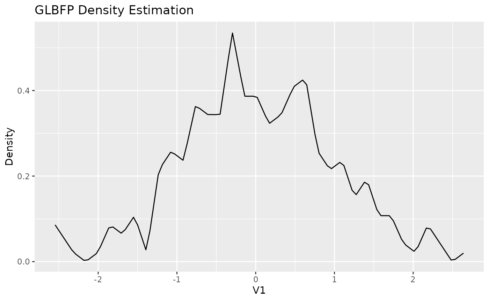
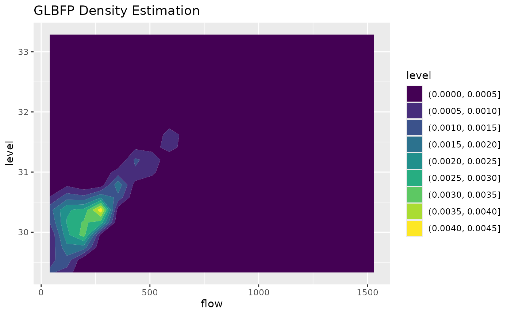

Motivation
GLBFP provides nonparametric density estimators based on
histogram-style constructions that remain computationally light and
interpretable.
Use cases:
- fast exploratory density estimation,
- smooth alternatives to raw histograms,
- 1D and 2D density estimation with consistent API.
Core functions
1D workflow
x1 <- matrix(rnorm(300), ncol = 1)
b1 <- compute_bi_optim(x1, m = 1)
fit1 <- GLBFP(x = 0, data = x1, b = b1, m = 1)
fit1
#> GLBFP Density Estimation:
#> Point: (0)
#> Estimated density: 0.3867351
#> Estimated standard error: 0.0838592
#> 95% confidence interval: 0.362643259199835, 0.410826868862035
#> Bandwidths (b): 0.155144970240404
#> Shifts (m): 1
grid1 <- GLBFP_estimate(data = x1, b = b1, m = 1, grid_size = 100)
plot(grid1)
2D workflow
x2 <- ashua[, c("flow", "level")]
b2 <- c(8, 0.4)
fit2 <- GLBFP(x = c(mean(x2$flow), mean(x2$level)), data = x2, b = b2, m = c(1, 1))
fit2
#> GLBFP Density Estimation:
#> Point: (249.022601959444, 30.4196864889496)
#> Estimated density: 0.003774417
#> Estimated standard error: 0.0003167353
#> 95% confidence interval: 0.00376917856755285, 0.00377965508177405
#> Bandwidths (b): 8, 0.4
#> Shifts (m): 1, 1
grid2 <- GLBFP_estimate(data = x2, b = b2, m = c(1, 1), grid_size = 20)
plot(grid2, contour = TRUE)